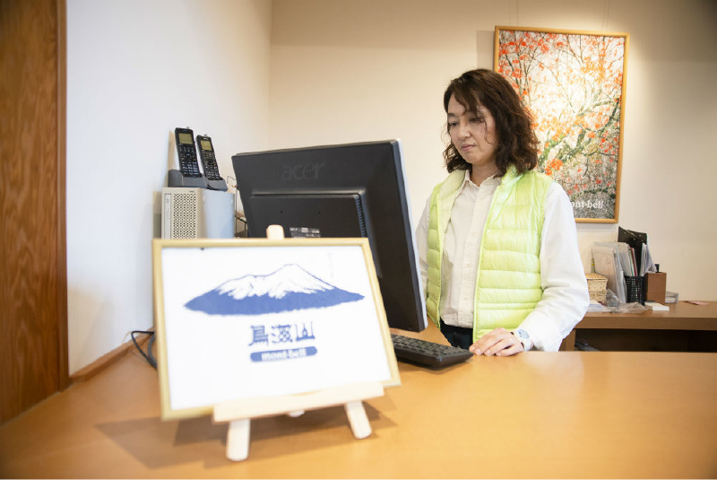
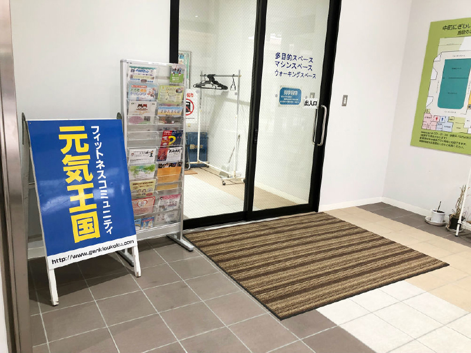
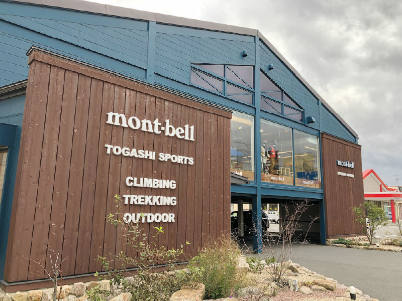

麓の町として鳥海山登山をサポート。20代で思い描いた
町のイメージが、人との関わりで大きく広がった。

庄内の仕事

庄内の暮らし


麓の町として鳥海山登山をサポート。20代で思い描いた
町のイメージが、人との関わりで大きく広がった。
1967年、スキー用品販売を中心に創業した「とがしスポーツ」が、2013年にモンベルルーム酒田店としてリニューアルした。海・山・川という庄内の豊かな自然を安全に楽しんでもらうために、モンベルをはじめとするアウトドアブランド製品を提供するのみではなく、正しいアウトドア知識の普及や情報提供も重視していると代表の佐藤香奈子は語る。
スポーツ店に生まれたために、両親には何かスポーツをして欲しいという思いがあった。そして、高校で山岳部に入ったことがアウトドアに触れる一つのきっかけになった。
「競わなくてもいいスポーツを選びたかったのが、高校で山岳部に入った一番の動機でした。山岳部が何をするかもよく知りませんでしたし、あとは、小さい頃からスキーは好きだったので、それも一つのきっかけでしたね」
実際に入部するとほぼ毎週、鳥海山に通うことになった。土曜日に半日の授業を終えると、午後から先生の車に乗せられて鳥海山へ。登山口が10ほどあるので、次の週はどこに行くかの計画書を書き、テントか山小屋での1泊を含む登山を繰り返した。
「最初は山で泊まること自体がおもしろかったのかもしれません。先生からは『お前たち、花の一つぐらい覚えろ』とか言われた記憶もありますけど、高校生なんてそんなものですよね。部の仲間と一緒にご飯を作ったり、シュラフで寝たり、最初はへとへとでしたが、だんだんと体力や技術がついてくることも楽しかったです。冬山合宿もありましたので、1メートル先も見えないような吹雪を経験したり、厳しい自然を体験しはしましたが、先生も仲間もいるし、本当に厳しいサバイバルという感じではありませんでした。ただ、最低限これだけはあれば生活できるという技術は身につきました」
ニュージーランドで知った「麓の町」の機能高校を卒業後には東京で大学に進学し、1年ほど就職して働いたのち、ワーキングホリデービザを取得してニュージーランドに向かった。アウトドアスポーツが非常に盛んで、自然がダイナミックで魅力的だと感じたために、1年ほど住むことを決めたのだ。自然環境に圧倒されたのと同時に、アウトドアを楽しむためのシステムも日本とは大きく異なると感じたという。
「例えば日本の山小屋だと、一応予約をしてから山に行くんですが、鳥海山の山頂の小屋なんかも夏場は予約が必要ではあるものの、基本的に入山規制をしないんです。キャパオーバーな感じで、ぎゅうぎゅうになって寝るみたいなところがある。でもニュージーランドはベッドの国なので、ベッド数イコール宿泊者数となっていて、それ以上の人間を泊まりで山に入れないようにセーブできる。山の麓の町にインフォメーションセンターがあって、そこで予約をするんですが、そこがきちんと入山者数を管理しているんです。
『明日行くんだったら雨が降ってぬかるんだ道があるからこういうものを用意しなさい』とか『雪が残っているから〇〇を準備しておいたほうがいい』とかの情報をくれて、山から帰ってくると『帰ってきたよ』って挨拶に立ち寄るような仕組みができあがっていた。麓の町で一泊してから登山をして、帰ってくるとインフォメーションセンターに立ち寄れる。その『麓の町』という考え方が私はとても好きでしたね」
ニュージーランドで出会った登山システムは同時に、自然に対する負荷の軽減にも役立っている。日本の人気の山では山頂あたりで行列ができ、登場までの最後の数10メートルを2時間待ちなんて事態も発生することがあるが、「麓の町」に1泊して、インフォメーションセンターから山頂の山小屋の予約と登山申請を行うニュージーランドやヨーロッパ各国では、山頂近くで行列を見ることはまずない。
「鳥海山の麓には4つの市町村があるんですが、各自治体でインフォメーションセンターを同じスタイルで作って、特に遊佐町を中心に麓の町の機能を持つ。『ここで1泊して情報収集をしてね』という町をつくりたいんですね。そうすることで山の自然に対する負荷が減り、日本の山は海外と比較してもとても美しいですから、例えば紅葉のように季節で色が変わるその色彩の豊かさを維持することができます。それは登山者に対して最も誇れる日本の山の魅力ですから」
ニュージーランドに1年ほど暮らし、自然の偉大さに圧倒されることも多かったが、「日本の山の色彩が懐かしいと強烈に感じた」ことから、庄内に戻ることを決めた。
「親が経営する『とがしスポーツ』で働き始め、酒田商工会議所青年部に入りました。これはとてもいい出会いでした。地域の経営者さんたちと出会い、仲間に入れてもらったことで、地域のことを好きになっていった。若い人たちが頑張らなきゃいけない、という気持ちはその出会いを通じて芽生えました。自分の商売だけをやっていても地域が廃れていく現状が見えてくるので、地域のこともやらないと、自分の店や商売もうまくいかないということを先輩方に教えられました」
循環の環と畜産の六次化 大学４年の頃に、いずれスポーツ店を継ぐことを決めていた佐藤は、スポーツときちんと向き合う必要を感じてスポーツプログラマーの資格を取得した。フィットネスの維持や向上のために運動メニューの提案やトレーニングの指導を行う、文部科学省公認のスポーツ指導者の資格だ。「とがしスポーツ」で働きながら、ほどなくしてその資格が役立つときがきた。酒田市のスポーツ振興課が主催するウォーキングの教室で、先生を務めてほしいという依頼を受けたのだ。「体のことや運動のことを勉強するのが好きなんだ」ということに気づけたという。
「間違ったフォームで歩くと痛みが生まれて、怪我にもつながるので、それを防ぐためのフォームを最初に伝えます。ただ、それが万人に正しい歩き方なのかというと、そうではない。年齢を重ねた体だと、例えば膝が痛いとか、腰が痛いとか、その人に無理がないように、でもなるべく効果的に歩けるフォームをお伝えします。それと目的も聞きます。その人はダイエットをしたいのか、筋肉をつけたいのか、景色を楽しむ散歩をしたいのか、それによってウォーキングのスタイルはかなり変わってきます」
「とがしスポーツ」で働きながら、週に1度か2度のペースでウォーキングのクラスを受け持っていた。やがて遊佐町からも声がかかるようになり、子どもたちの運動指導なども行うようになった。単発で行われていたウォーキングのクラスも、週1で3ヶ月間続けるような形に変わり、新たな気づきもあった。
「継続的にクラスを持つと、3ヶ月目には本人的にも周りから見ても、『この人は変わってきたな』という目に見えた変化が生まれてくるんです。姿勢がよくなったとか、お腹がへこんだとか、明るい顔になったとか。でも、3ヶ月で1クールというのが行政の基本スタンスなので、そこで終わってしまうのが非常にもったいないと感じていました。同じ思いをしていた指導員が周りにもいたので、じゃあ賛同者を10人集めてNPO法人を立ち上げようと。そうして『元気王国』をオープンしました」
…………
「元気王国」は事業を継続し、「とがしスポーツ」も「モンベルルーム酒田店」としてリニューアルオープンするなど、スポーツと健康を軸にキャリアを積み重ねてきた。そして2018年4月より、佐藤が携わる分野が思いがけず広がりを見せる。酒田市産業振興まちづくりセンター（通称サンロク）でコンシェルジュを務めることになったのだ。
「酒田市内で新しい分野に挑戦できる環境を作ったり、酒田市の人や団体を東京や首都圏の企業とつないだり、酒田市の農商工分野の産業振興を支援する」ために設立されたサンロクで、新たなマッチング事業のサポートやアドバイスを行う役割だとコンシェルジュについて説明する。
「私はスポーツと健康分野以外はやるつもりがなかったんですが、コンシェルジュという役割についたことで、農業の高齢化対策や女性活躍の支援など、地域の問題が色々とはっきり見えてきました。異業種の人たちと出会うことができて、お話を伺えると『こういうコラボが生まれたらもっと活性化する』『いいものが生まれる』とか、アイデアも出てきます。それに、人と会う中で、庄内の女性はとても元気だということも感じました。聡明で我慢強い女性が多い。不満を持っている方もいますが、その不満のエネルギーを前向きにチェンジするだけで、新しいことをスタートできる人はいっぱいいるなと実感するので、コンシェルジュの役割を引き受けてよかったと思える点は多いです」
「サンロク」には、鳥海山の「山麓」に位置する酒田市で、市街地の中心から庄内、山形、日本、世界へと「360度全方位」につなぎ、政治的・経済的・文化的に活躍した「酒田を起こした36人衆」のような人材を応援したい、という思いが込められている。現在は、現在は、「とがしスポーツ」「元気王国」「サンロク」の3つの業務に対して、時間も、労力も、思考も同じだけの量を注いでいるという佐藤は、かつて思い描いた「麓の町」のイメージがここまで広がるとは思っていなかっただろう。登山者をサポートする「麓の町」が、新たな事業を発信し、人と人とのつながりを生み出す「麓の町」に変わったのだから。
あなたが「いいね」したことが企業に通知されます。
企業もあなたに興味を持てば、メッセージが返ってきます。
「いいね」しない